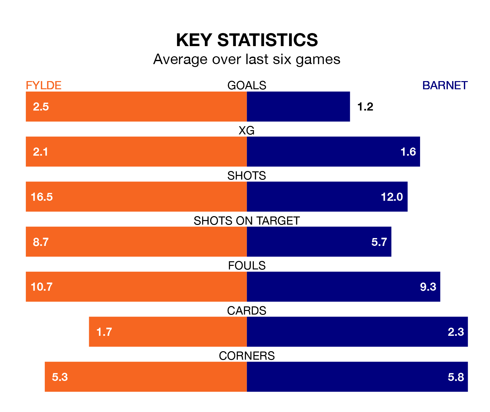

Fylde are on an excellent run ahead of hosting Barnet at the Mill Farm Stadium on Saturday, with 16 points collected from their last six games.
The Coasters have picked up five wins and one draw in their last six National League games, and face a Bees side whose last six games have brought two wins and one draw.
With 59 goals in 31 games so far this season, Barnet are the league's second-highest scorers with 1.9 goals per game. And they are conceding at an average rate, letting in 45 goals at a rate of 1.5 per game.
Fylde are also above average scorers, with 1.6 goals per game, compared to a league average of 1.5. They have conceded 1.7 goals per game.
The Bees are third in the table after 31 games, of which they have won 17 and drawn five, earning 56 points.
The Coasters are 15 places behind the away side in 18th, with 10 wins and eight draws putting them on 38 points.
In the last 10 years, Fylde and Barnet have played each other on six occasions. Fylde won one of them, Barnet three, and they drew twice.
On average, the Coasters scored 0.7 goals and the Bees 1.5 in those matches.
Their last meeting was on October 3, when Barnet won 2-1 at home.
Fylde's last match was on Tuesday, a 5-0 win against Aldershot Town, with Josh Kay (two), Joe Westley, Jonathan Ustabaşı and Nicholas George Haughton getting the goals for the Coasters.
Barnet drew 1-1 with Wealdstone last time out, on February 3, with Callum Stead on the scoresheet.
Updated: 13:04 (UTC), 16/02/24